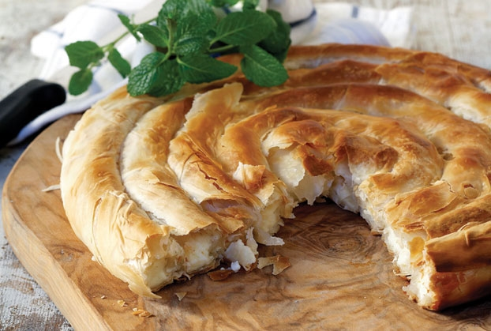

Greek cuisine is a Mediterranean cuisine and therefore has many similarities with Italian and Spanish cuisine. However, it is also heavily influenced by Turkish cuisine – they share foods such as baklava, tzatziki, dolmades and yuvarlakia.
Although Greece is a small country, each region in the past had quite different types of food production which throughout the years resulted in a very diverse cuisine. The culture, though, is the same! Food plays an important role in socializing with others, in sharing moments with family and friends over wine, ouzo, rakh, or rakomelo drinks. It is quite common to see on a table lots of mezedes or orektika together (appetizers).
Lots of olive oil, tomato sauce, garlic, onion, a bit of herbs – oregano, black pepper, salt everywhere! And then vegetables, grains, dairy (with the most well-known feta cheese), lots of legumes and pulses (lentils, chickpeas in soups), meat in moderation – particularly common in festive plates, fish and seafood.
There are so many different kinds of pies and you can find them in bakeries but even in restaurants, tavernes or mezedopoleia. Some of the most well-known are different kinds of feta cheese pie and feta (tyropita), spinach pie (spanakopita) and pumpkin pie (kolokuthopita)! The ones made with handmade rolled phyllo sheets are very unique in taste and texture. If the cook is very experience, pites end up being one of the best foods there.
